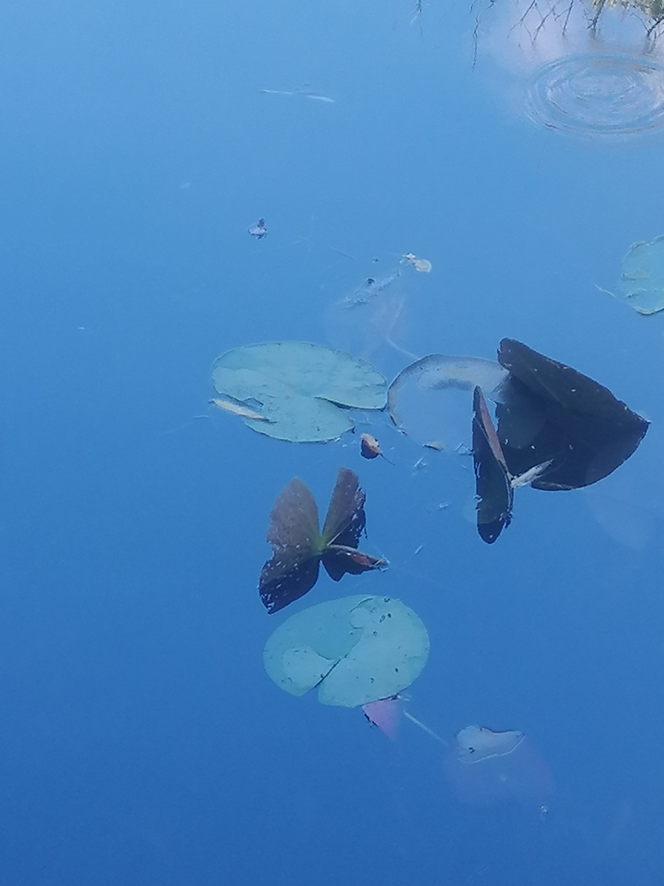

FR
Véronique Pagnon
Context Consulting
You are at a decisive crossroads, stuck in a complex or stagnant situation.
See the offers ↓
It could well be that you are in the right place, because the answer is often where we don't think to look.
The most active elements in a situation often hide where you would not think to look.
In our consultations, we go to the heart of your situation. Through the words you choose, what your body conveys, what circulates through your story. I read what is there and help you see it too.
We go behind the scenes of what is really at play for you, and we can scan the major influences, those that hold you back and those that can propel you forward.
This is not therapy. It is a form of discernment and training so that your habits and your ambitions find the paths that carry your projects and your vision forward.
Context Consulting scans the terrain. Makes visible what is not yet: the blind spots, the levers and the assets available and ready to be strengthened, so you can position yourself with precision, act and make decisions without regretting them or second-guessing yourself.

Water lilies, Giverny gardens, 2019 — personal photograph (original, centre image).
Without context, and without a reading of the detail, it is hard to know what you are really looking at.
That is exactly what we do with your situation: engage with the details while holding an awareness of the broader context, and varying the filters of perception.
A diagnostic of your current blind spots, the influences holding you back, the ones carrying you forward, and the paths worth considering. You leave with clarity on what is at play, and the ability to decide without hesitating and without regret.
In every Diagnostic Clarity, three levers activate. A new path becomes possible.
Your blind spots are revealed. You feel the shift. Your assets strengthen. You take back the lead. You can make your mark again. Scan Boost provides a framework, an impetus.
The method I developed to read a situation in all its complexity. It combines two types of reading that are rarely associated. A systematic and concrete inquiry, and the reading of what operates in the invisible, like the intangible influences that can nonetheless be determining.
Systemic analysis and human dynamics · Relational dynamics and power stakes · Influence systems activated in the situation.
Reading through words, narratives, the body · Symbolic lines · Tarot · Akasha


I am Véronique Pagnon, founder of the Context Consulting method. For eight years, I have been working with people who want to see clearly in their situation, whatever it may be.
I created this method at a time when life transitions are accelerating and multiplying, to bring together in a coherent approach the tools I know best.
My background over thirty years weaves together journalism, the study of political and social systems, personal accompaniment, and movement, through my experience as a fitness and yoga instructor, and my passion for dance. So many different readings of the same thing: what is really at play in a situation. What is moving within it, and what is standing still. Beyond what we perceive of it.